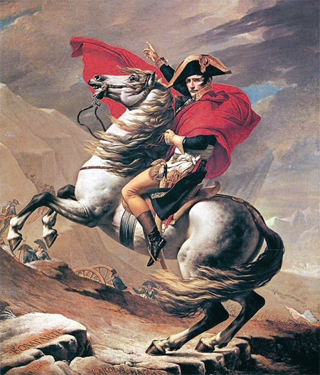

작품 제목 : 나폴레옹 성장기
작품 소개 : 나폴레옹의 명성을 획득하자. 그렇지만 많은 인지도와 명성은 때론 해가 될거이니
작품 방법 : 마우스에 따라 나폴레옹이 움직이고 마우스 클릭에따라 크기가 커진다. 다만 많은 클릭은 왜소해지는 원인이 된다.
부가 설명 : 원래는 4X4 퍼즐게임으로 만들기위해 p5.js 이미지배열과 그쪽을 공부하는 중에 class선언을 어떻게 할지 몰라서 며칠 헤메이다가 결국
전날에 부득이하게 바꾸게 되었다.....슬프다
[돌아가기]
